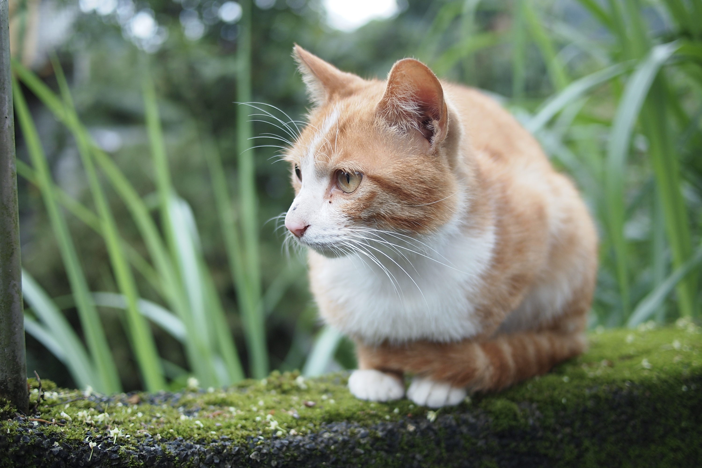
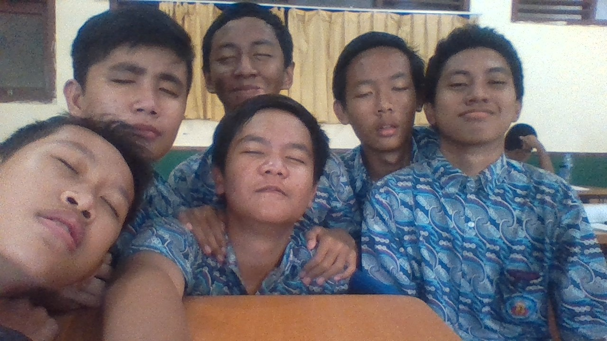

Rafi'ud Darojat
Siswa
Bogor,Indonesia
rafiuddar63@smakbo.sch.id
0858-1951-9309
Ability
Chemical
80%
Musical
70%
Historycal
50%
Multimedia
40%
Languages
Indonesia
English
German
Cerita Tentangku
Aku lahir pada tanggal 11 Desember 2001 di Bogor. Aku tinggal dan besar di daerah Citeureup, Bogor.Aku merupakan anak pertama dari 3 bersaudara. Tahun ini aku sudah berumur 17 tahun, jadi tahun ini aku bisa mengikuti pemilihan umum presiden, yeaaahh.
Aku menyukai kucing, karena itu aku memelihara seekor kucing. Tapi sayangnya, sekarang kucingku sudah hilang atau mati :'( . Ini adalah foto kucingku.
My beloved Cat

Ingin tau cerita di masa sekolahku?
Klik Disini
